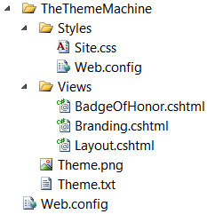
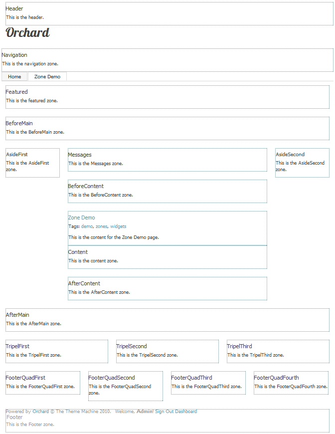
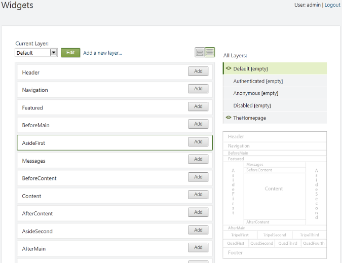
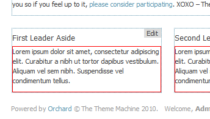

Themes enable Orchard users to customize the rendering of the site and tailor it to their needs and design goals. Themes can perform targeted overrides of style sheets, images, layouts, or of any content template provided by any Orchard module.
主题使Orchard用户能够自定义网站的呈现，并根据他们的需求和设计目标进行定制。主题可以执行样式表，图像，布局或任何Orchard模块提供的任何内容模板的目标覆盖。
Where Themes Live
主题直播的地方
A theme is set of appropriately named files inside of a folder. That folder must be under the Themes folder under your Orchard website's root folder.
主题是在文件夹内设置适当命名的文件。该文件夹必须位于Orchard网站根目录下的_Themes_文件夹下。
TheThemeMachine
TheThemeMachine
The theme named TheThemeMachine is the theme that comes built into Orchard. You can examine this theme in order to learn about Orchard themes. Like any theme, it can be found under the Themes folder.
名为TheThemeMachine 的主题是Orchard内置的主题。您可以检查此主题以了解Orchard主题。与任何主题一样，它可以在_Themes_文件夹下找到。

The TheThemeMachine theme has been designed to be a clean-looking, modern theme and to be a good starting point for customization and for the development of new themes. This article uses this theme as an illustration.
TheThemeMachine 主题旨在成为一个整洁，现代的主题，并成为定制和新主题发展的良好起点。本文使用此主题作为说明。
Anatomy of a Theme
主题剖析
This section describes required and optional elements of a theme.
本节介绍主题的必需元素和可选元素。
Manifest
表现
To be valid, a theme must have a manifest that describes it to the system. The manifest is a text file named Theme.txt that is found in the root folder of the theme it describes. Here is the manifest for the TheThemeMachine theme:
为了有效，主题必须具有向系统描述它的清单。清单是一个名为_Theme.txt_的文本文件，可在其描述的主题的根文件夹中找到。这是 TheThemeMachine 主题的清单：
Name: The Theme Machine
Author: jowall, mibach, loudej, heskew
Description: Orchard Theme Machine is a flexible multi-zone theme that provides a solid foundation to build your site. It features 20 collapsible widget zones and is flexible enough to cover a wide range of layouts.
Version: 1.8.1
Tags: Awesome
Website: http://orchardproject.net
Zones: Header, Navigation, Featured, BeforeMain, AsideFirst, Messages, BeforeContent, Content, AfterContent, AsideSecond, AfterMain, TripelFirst, TripelSecond, TripelThird, FooterQuadFirst, FooterQuadSecond, FooterQuadThird, FooterQuadFourth, Footer
The beginning of the file gives the theme a friendly name, description, author, description, and tags. The Zones field provides a list of all the zone names that are going to be available for widgets throughout the theme's layouts and templates. Zones are containers that can be added to any template or layout. Various UI elements can be injected into zones, but the most common ones are widgets. Not all zones need to be exposed in the manifest, only those that are intended to host widgets.
文件的开头为主题提供了友好的名称，描述，作者，描述和标签。 Zones字段提供了整个主题布局和模板中可用于小部件的所有区域名称的列表。区域是可以添加到任何模板或布局的容器。可以将各种UI元素注入区域，但最常见的是小部件。并非所有区域都需要在清单中公开，只有那些用于托管小部件的区域。

This illustration shows 19 zones, which is typically more than you need for a site. The zones include a header and footer, which are zones situated on the top and bottom of the page. There is a navigation zone, which is typically where navigation menus would be inserted. The Featured zone is where you might put a site banner. BeforeMain and AfterMain surround the main zones on the top and bottom. AsideFirst and AsideSecond are sidebars that are rendered on the left and right of the main content. In the center of the page there is a Messages zone where notifications go, followed by BeforeContent, the content itself, the Content zone and the AfterContent zone. On the bottom of the page, there are TripelFirst, TripelSecond, and TripelThird that you can use if you want three columns on the bottom, and the FooterQuad* zones that you can use if you want four columns.
此图显示了19个区域，通常比您需要的站点多。这些区域包括页眉和页脚，它们是位于页面顶部和底部的区域。有一个导航区，通常是插入导航菜单的地方。您可以在“特色”区域放置网站横幅。 BeforeMain和AfterMain围绕顶部和底部的主要区域。 AsideFirst和AsideSecond是在主要内容的左侧和右侧呈现的侧边栏。在页面的中心有一个Messages区域，其中有通知，然后是BeforeContent，内容本身，Content区和AfterContent区。在页面的底部，有“TripelFirst”，“TripelSecond”和“TripelThird”，如果你想在底部有三列，你可以使用它们，如果你想要四列你可以使用FooterQuad *区域。
All zones in TheThemeMachine theme are collapsible, which means that they will only be rendered if there is content in them.
TheThemeMachine 主题中的所有区域都是可折叠的，这意味着只有在其中包含内容时才会呈现它们。
Icon or Thumbnail
图标或缩略图
A Theme.png file should be included with all Orchard themes. This image should be at least 400x400 pixels and is meant to represent the theme in the gallery or in the theme administration page. It usually is a thumbnail image of a page of a site rendered using that theme.
所有Orchard主题都应包含_Theme.png_文件。此图像应至少为400x400像素，用于表示图库或主题管理页面中的主题。它通常是使用该主题呈现的网站页面的缩略图。
Widget Zones Preview Image
小部件区域预览图像
Optionally, a preview image for the widget zones can be added to the theme. The image should be placed at the root of the theme and be called ThemeZonePreview.png. This image should be 400 pixels wide and should show the different zones and their names. An example can be found in TheThemeMachine.
可选地，可以将小部件区域的预览图像添加到主题。图像应放在主题的根部，称为ThemeZonePreview.png。此图像应为400像素宽，并应显示不同的区域及其名称。可以在TheThemeMachine中找到一个例子。

Static Resources
静态资源
A theme typically contains a number of static resources, such as CSS style sheets, JavaScript files, or images. Those files must be in the following folders:
主题通常包含许多静态资源，例如CSS样式表，JavaScript文件或图像。这些文件必须位于以下文件夹中：
-
CSS style sheets should be in the \Styles folder of the theme.
-
CSS样式表应位于主题的_ \ Styles_文件夹中。 *
-
JavaScript files should be in the \Scripts folder of the theme. Any scripts you put in this folder should be custom scripts that are only related to your theme, not scripts that are intended to be reused. Such reusable scripts should be included in a separate module. See the jQuery module for an example.
-
JavaScript文件应位于主题的_ \ Scripts_文件夹中。放在此文件夹中的任何脚本都应该是仅与主题相关的自定义脚本，而不是要重用的脚本。此类可重用脚本应包含在单独的模块中。有关示例，请参阅jQuery模块。 *
-
Images should be in \Content\Images folders. If your theme contains few images, it's fine to keep them all at the same level. However, if you have many images, it is recommended that you organize them in subfolders.
-
图像应位于_ \ Content \ Images_文件夹中。如果你的主题包含很少的图像，那么将它们保持在同一级别就可以了。但是，如果您有许多图像，建议您将它们组织在子文件夹中。 *
Note To enable files to be served, each of the folders that contains static files such as style sheets, images, or JavaScript code should contain a web.config file that contains the following content:
注意要启用文件，每个包含样式表，图像或JavaScript代码等静态文件的文件夹都应包含一个包含以下内容的_web.config_文件：
<?xml version="1.0" encoding="UTF-8"?>
<configuration>
<system.webServer>
<staticContent>
<clientCache cacheControlMode="UseMaxAge" cacheControlMaxAge="7.00:00:00" />
</staticContent>
<handlers accessPolicy="Script,Read">
<!--
iis7 - for any request to a file exists on disk, return it via native http module.
accessPolicy 'Script' is to allow for a managed 404 page.
-->
<add name="StaticFile" path="*" verb="*" modules="StaticFileModule" preCondition="integratedMode" resourceType="File" requireAccess="Read" />
</handlers>
</system.webServer>
</configuration>
Document
文献
The Document.cshtml file is usually not found in themes because there is seldom any reason to overwrite it. Most themes can just fall back to the version of the file that can be found in the SafeMode theme, under \Views. The Document.cshtml file is responsible for the HTML that goes around the body element. This means it defines the doctype element (Orchard assumes the HTML5 document type), the html element, the head element (where it defines the head zone where the meta tags), some script elements, and the links for style sheets to be inserted. (This is different from the Header zone, which is the top zone in the body.) The Document.cshtml file also contains the title element inside the head element. Finally, the file defines the body element where the Body and Tail zones are rendered.
Document.cshtml_文件通常在主题中找不到，因为很少有任何理由覆盖它。大多数主题可以回退到可以在 \ ViewsM中的 SafeMode 主题中找到的文件版本。 Document.cshtml_文件负责围绕body元素的HTML。这意味着它定义了doctype元素（Orchard假定HTML5文档类型），html元素，head元素（它定义了meta标签的头区域），一些script元素，以及要插入的样式表的链接。 （这与Header区域不同，它是正文中的顶部区域。） Document.cshtml_文件还包含head元素内的title元素。最后，该文件定义了body元素，其中呈现了Body和Tail区域。
Layouts
布局
Layouts are the outermost shape that is rendered within the body element. For example, this is typically where you define the main widget zones. You can read about the details of the markup inside of a layout in the Markup section later in this document.
布局是在body元素内呈现的最外层形状。例如，这通常是您定义主要窗口小部件区域的位置。您可以在本文档后面的[标记]（＃标记）部分中阅读布局内部标记的详细信息。
A theme can contain any number of layout files, even though currently only one is supported and included in the TheThemeMachine theme, namely Layout.cshtml. For example, a theme can add specialized layouts, such as Layout-Blog.cshtml or Layout-HomePage.cshtml, that would be used instead of the default for a blog or for the homepage, provided there is an extension providing those layout shape alternates. Notice that layouts are named Layout-{layout name}.cshtml. Each layout can have a different set of zones, organized differently in markup.
主题可以包含任意数量的布局文件，即使目前只有一个支持并包含在 TheTheMachine 主题中，即_Layout.cshtml_。例如，主题可以添加专门的布局，例如_Layout-Blog.cshtml_或_Layout-HomePage.cshtml_，它们将用于代替博客或主页的默认布局，前提是有一个扩展提供那些布局形状替代。请注意，布局名为_Layout - \ {layout name \}。cshtml_。每个布局都可以有一组不同的区域，在标记中的组织方式不同。
For an example of how your own modules and themes can provide alternative layouts based on custom criteria, see Switching the Layout in Orchard CMS.
有关您自己的模块和主题如何根据自定义条件提供替代布局的示例，请参阅[在Orchard CMS中切换布局]（http://weblogs.asp.net/bleroy/archive/2010/12/14/switching -the-布局在果园-cms.aspx）。
Shape Templates
形状模板
In Orchard, before a web page is rendered into HTML, it is built as a tree of shapes. Shapes are flexible objects that represent the objects that will contribute to the rendering of the page. Examples include zones, menus, menu items, and widgets.
在Orchard中，在将网页呈现为HTML之前，它被构建为[形状]树（访问和渲染形状）。形状是灵活的对象，表示将有助于页面呈现的对象。示例包括区域，菜单，菜单项和小部件。
Each shape can be rendered by a template, which can be overridden by a theme. Templates have the same name as the shape they are made to render. For example, if Menu.cshtml exists, it is used to render a Menu shape.
每个形状都可以通过模板呈现，模板可以被主题覆盖。模板与要渲染的形状具有相同的名称。例如，如果存在_Menu.cshtml_，则它用于呈现“Menu”形状。
The TheThemeMachine theme has two shape templates, BadgeOfHonor and Branding, which are built from Layout.cshtml and injected into the Header and Footer zones using the following code:
TheThemeMachine 主题有两个形状模板，BadgeOfHonor和Branding，它们是从_Layout.cshtml_构建的，并使用以下代码注入到Header和Footer区域：
// Site name and link to the home page
WorkContext.Layout.Header.Add(New.Branding(), "5");
// Powered by Orchard
WorkContext.Layout.Footer.Add(New.BadgeOfHonor(), "5");
Note Templates are one of two ways to render shapes. In addition to templates, you can define the rendering using code, by defining a method that has a
Shapeattribute. Look for the CoreShapes.cs file for examples. This is usually done in modules, but themes can do it as well.注意模板是渲染形状的两种方法之一。除了模板之外，您还可以通过定义具有“Shape”属性的方法来使用代码定义渲染。查找_CoreShapes.cs_文件以获取示例。这通常在模块中完成，但主题也可以这样做。
Item Templates
物品模板
Themes can override how content items are rendered by including a template in their \Views\Items folder. The name of the template should be Content-{content type name}.cshtml or Content-{content type name}.{display type}.cshtml. For example, a template that overrides how blog posts are rendered should be \Views\Items\Content-BlogPost.cshtml, and a template that overrides the summary rendering of a blog post should be \Views\Items\Content-BlogPost.Summary.cshtml.
主题可以通过在_ \ Views \ Items_文件夹中包含模板来覆盖内容项的呈现方式。模板的名称应为_Content - \ {content type name \}。cshtml_或_Content - \ {content type name \} \。\ {display type \}。cshtml_。例如，覆盖博客文章呈现方式的模板应为_ \ Views \ Items \ Content-BlogPost.cshtml_，并且覆盖博客文章摘要呈现的模板应为_ \ Views \ Items \ Content-BlogPost。 Summary.cshtml_。
Part Templates
零件模板
Themes can override the rendering of content parts. The convention is similar to the convention for content item templates. The template for a part must be in \Views\Parts and must be named for the shape for the part. For example, the rendering for comments can be overridden by creating the file \Views\Parts\Comments.cshtml.
主题可以覆盖内容部分的呈现。该约定类似于内容项模板的约定。零件的模板必须位于_ \ Views \ Parts_中，并且必须为零件的形状命名。例如，可以通过创建文件_ \ Views \ Parts \ Comments.cshtml_来覆盖注释的呈现。
Field Templates
字段模板
Field rendering can be overridden as well, although not yet at the field instance level. In other words, you can override what a text field looks like but not what a specific text field looks like. To override a field template, create a {field type name}.cshtml or {field type name}.{display type}.cshtml file in \Views\Fields. For example, the rendering of text fields can be overridden by a \Views\Fields\Common.Text.cshtml template.
字段渲染也可以被覆盖，尽管还没有在字段实例级别。换句话说，您可以覆盖文本字段的外观，但不能覆盖特定文本字段的外观。要覆盖字段模板，请在_ \ Views \ Fields_中创建_ \ {字段类型名称\} .cshtml_或_ \ {字段类型名称\} \。\ {display type \}。cshtml_文件。例如，文本字段的呈现可以被_ \ Views \ Fields \ Common.Text.cshtml_模板覆盖。
Alternates
候补
Alternates are a set of related shapes with corresponding templates or layout files that enable you to control how different types of content are rendered within a theme. For example, you can use alternates to apply one layout file for the home page but another layout file for subpages, or you can use alternates to render elements one way when the elements are in a page but a different way when they are in a blog post.
替代是一组相关的形状，具有相应的模板或布局文件，使您可以控制在主题中呈现不同类型的内容的方式。例如，您可以使用替换为主页应用一个布局文件，但为子页面应用另一个布局文件，或者您可以使用替换为元素在页面中时以一种方式呈现元素，但在博客中使用时则不同帖子。
For more information, see Alternates.
有关更多信息，请参阅[替代]（替代）。
Widget Overrides
小部件覆盖
The rendering for widgets can also be overridden by creating a template in \Views named widget-{widget type}. For example, you can override the rendering of the HTML widget and add a red frame around the content by putting the following widget-htmlwidget.cshtml file into the \Views folder of your theme:
还可以通过在_ \ Views_ named widget - \ {widget type \} _中创建模板来覆盖窗口小部件的呈现。例如，您可以通过将以下_widget-htmlwidget.cshtml_文件放入主题的 \ Views_文件夹中来覆盖HTML小部件的呈现并在内容周围添加红框：
<div style="border:1px red solid">
@Display(Model.Content)
</div>

Note that this is just a simple example, and normally adding a frame would be better done using CSS.
请注意，这只是一个简单的示例，通常使用CSS可以更好地添加框架。
Placement Files
展示位置文件
A theme can modify where shapes are rendered by including a Placement.info file at the root of the theme folder. The Placement.info file is an XML file. Here is an example:
主题可以通过在主题文件夹的根目录中包含“Placement.info”文件来修改呈现形状的位置。 Placement.info文件是一个XML文件。这是一个例子：
<Placement>
<!-- widgets -->
<Place Parts_Blogs_BlogArchives="Content:before"/>
<Place Parts_Blogs_RecentBlogPosts="Content:after"/>
<!-- default positioning -->
<Match ContentType="Blog">
<Match DisplayType="Summary">
<Place Parts_Blogs_Blog_Description="Content:before"
Parts_Blogs_Blog_BlogPostCount="Meta:3"/>
</Match>
</Match>
</Placement>
Markup
标记
The markup in each file is constrained by the view engine that you choose. The default in Orchard is Razor (.cshtml files), for which a quick guide can be found in Template File Syntax Guide.
每个文件中的标记都受您选择的视图引擎的约束。 Orchard中的默认值是Razor（_.cshtml_文件），可以在[模板文件语法指南]（模板文件语法指南）中找到快速指南。
Within a template, the Model object represents the current shape being rendered. That means that if you are working with the message shape, which has a Message property, you can display that by writing @Model.Message from within the template markup.
在模板中，Model对象表示正在渲染的当前形状。这意味着如果您正在处理具有“Message”属性的消息形状，则可以通过在模板标记内编写“@ Model.Message”来显示该属性。
An important addition that Orchard provides is the Display method, which renders a shape. For example, if you look at the layout.cshtml file, you can see how the zones are rendered, using calls such as @Display(Model.Content).
Orchard提供的一个重要补充是Display方法，它呈现一个形状。例如，如果查看_layout.cshtml_文件，可以使用诸如@Display（Model.Content）之类的调用来查看区域的呈现方式。
Finally, you can also see in various templates calls such as @Html.RegisterScript("mystyle.css") or @Html.RegisterScript("myscript.js"). These registration calls are necessary because the collections of scripts and stylesheets are a shared resource. The same link or script element should not be rendered twice even if multiple modules or multiple instances of the same widget require the same file.
最后，您还可以在各种模板调用中看到@ Html.RegisterScript（“mystyle.css”）或@Html.RegisterScript（“myscript.js”）。这些注册调用是必需的，因为脚本和样式表的集合是共享资源。即使多个模块或同一小部件的多个实例需要相同的文件，也不应该呈现相同的link或script元素两次。
Themes with Code
主题与代码
Most themes will consist only of a stylesheet, a few templates (usually layouts), and a few images. They will contain no code except for the simple code in the template files. For more advanced themes, you might want to provide settings, create custom shapes, or override shapes in code.
大多数主题仅包含样式表，一些模板（通常是布局）和一些图像。除模板文件中的简单代码外，它们不包含任何代码。对于更高级的主题，您可能希望在代码中提供设置，创建自定义形状或覆盖形状。
To address these scenarios, it is possible to build a theme much like a module and include a .csproj file that describes how to compile the code it contains. For information about module development, see Walkthrough: Writing An Orchard Module and Creating a Module with a Simple Text Editor.
为了解决这些问题，可以像模块一样构建一个主题，并包含一个_.csproj_文件，该文件描述了如何编译它包含的代码。有关模块开发的信息，请参阅[演练：编写果园模块]（演练 - 编写 - 果园 - 模块）和[使用简单文本编辑器创建模块]（创建模块 - 简单 - 文本编辑器）。